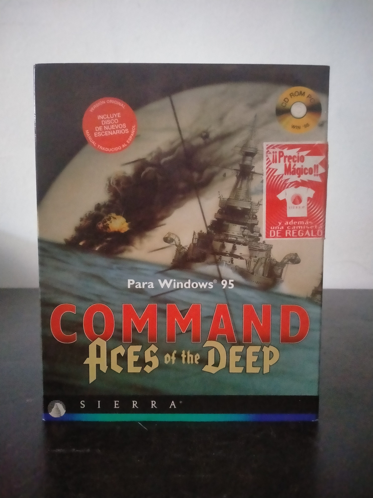

Ficha #000107
Command: Aces of the Deep
Command: Aces of the Deep es la versión para Windows 95 del reconocido simulador de submarinos de Dynamix y Sierra On-Line, centrado en la guerra submarina alemana durante la Segunda Guerra Mundial. El jugador asume el mando de un U-boat en el Atlántico Norte, gestionando navegación, inmersiones, detección acústica, ataques con torpedos, fuego de cubierta y supervivencia frente a escoltas, aviones antisubmarinos y convoyes aliados. Esta edición destaca por adaptar la simulación original al entorno Windows 95 con tecnología de 32 bits, multitarea y soporte opcional para órdenes habladas mediante IBM VoiceType, además de incorporar nuevos escenarios. La edición física distribuida en España por Coktel Educative conserva especial interés documental por su manual traducido al español, sus materiales de referencia y su pertenencia al catálogo de simuladores militares complejos de Sierra/Dynamix de mediados de los noventa.
- Formato
- Big Box
- Plataforma
- Win95
- Género
- Simulación Simulador de submarinos Simulación naval Simulación bélica Estrategia táctica
- Serie
- Todos Big Box
- Desarrollador
- Dynamix
- Distribuidor
- Sierra On-Line, Coktel Educative
- EAN
- 3348542007499
Contenido de la edición
- Caja Big Box
- CD-ROM en caja jewel case
- Manual en español
- Manual de escenarios o misiones
- Tarjeta de referencia rápida
- Carta o mapa impreso
- Hoja informativa de Coktel Educative
Preservación
- Protección
- No determinado
- Formato recomendado
- BIN/CUE
- Jugable en virtualización
- Sí
Preservación recomendada mediante imagen completa del CD-ROM original en BIN/CUE o ISO, junto con digitalización del manual, tarjeta de referencia y documentación de escenarios. La ejecución virtual debería ser viable en un entorno Windows 95/98 configurado para juegos CD-ROM de Sierra/Dynamix, manteniendo la imagen montada si la edición realiza comprobación de disco.